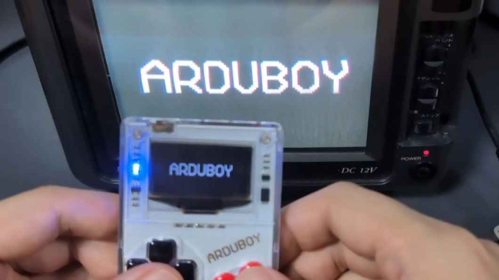
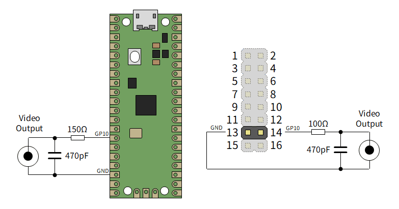
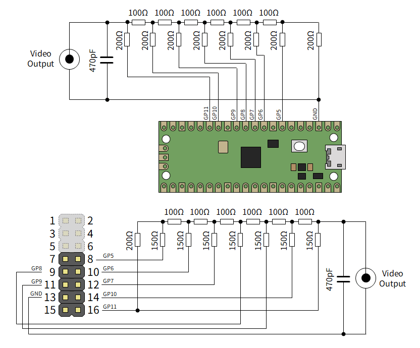
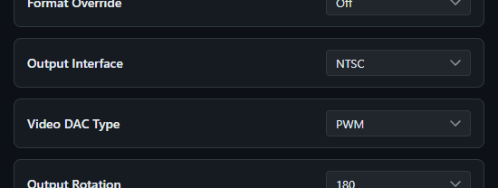

LcdTap: アナログテレビを I2C/SPI ディスプレイとして使う
LcdTap のファームウェアを更新し、空き端子を使って NTSC/PAL 信号を出力できるようにしました。アナログテレビを I2C/SPI ディスプレイとして使うことができます。

LcdTap とは
LcdTap は、 SSD1306、ST7789、ILI9342 などの LCD コントローラや OLED コントローラの動作を エミュレーションして、大きなディスプレイにミラーリングしたり、 キャプチャしたりできるようにするライブラリおよびアプリケーションです。
ラズピコ 2 で自作することも、 BOOTH で基板を購入することもできます。
コンポジットビデオ出力機能の追加
LcdTap のユースケースとしてレトロ (っぽい) デバイスのディスプレイを 大きなモニタにミラーリングするというのがあるので、 ブラウン管テレビのようなアナログディスプレイに出力するニーズもあるかも ということで、コンポジットビデオ出力機能を追加しました。
v202607270853 以降のファームウェアで利用可能です。
接続
LcdTap には 12 本の入力端子がありますが、SPI/I2C モードで使用されない 残りの端子にコンポジットビデオ出力端子を割り当てました。 2 つのモードがありますが、いずれもモニタ側に 75Ω の終端抵抗を期待します。
PWM モード
らびやん氏の rp2040_pwm_ntsc.ino を ベースにした PWM 出力モードは、後述の R-2R モードと比べるとやや低品質ですが、 抵抗とコンデンサを 1 つずつ追加するだけで NTSC/PAL 信号を出力できます。
BOOTH で販売中の基板を用いる場合は、各 GPIO に直列に挿入されている ダンピング抵抗 47Ω の分を差し引いて 150Ω → 100Ω にします。

R-2R モード
R-2R モードはより多くのピンと部品を使用しますが、PWM モードよりも 高品質で安定した映像を得られます。 R-2R モードは I2C モードと同時に使用することはできません (端子が重複するため)。
BOOTH で販売中の基板を用いる場合は、各 GPIO に直列に挿入されている ダンピング抵抗 47Ω の分を差し引いて 200Ω → 150Ω にします。

コンポジット出力への切り替え
コンフィグレーションで Output Interface を NTSC に切り替えます。 Video DAC Type は外部回路に応じて PWM または R-2R を選択します。
OSD でも切り替え可能ですが、出力がうまくいかないと画面が見えず 操作できなくなってしまうので、 ブラウザからの切り替えを お勧めします。

動作の様子
PWM モードでの動作の様子です (Arduboy、Xiamocon、PicoPad、M5Stack CoreS3)。